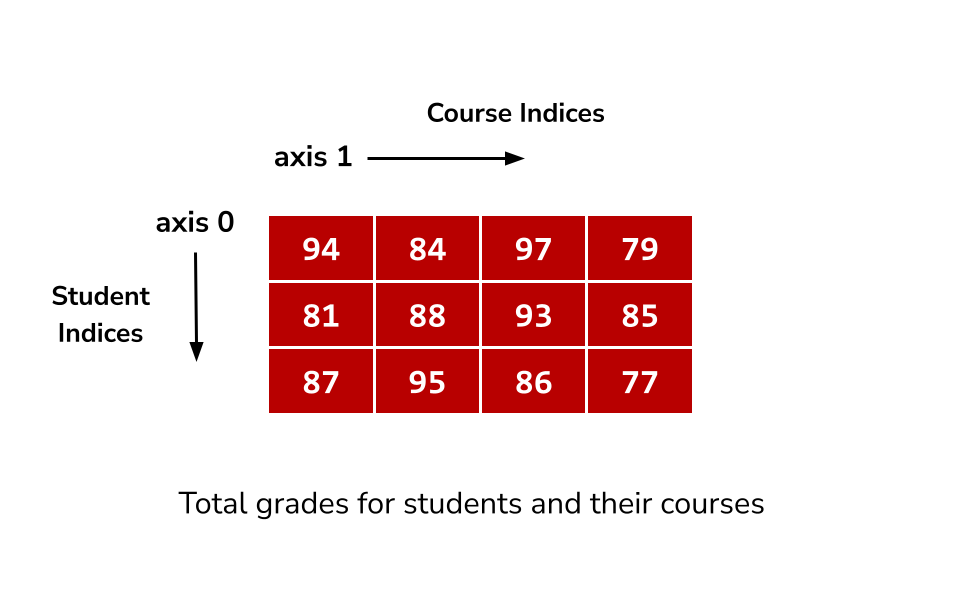
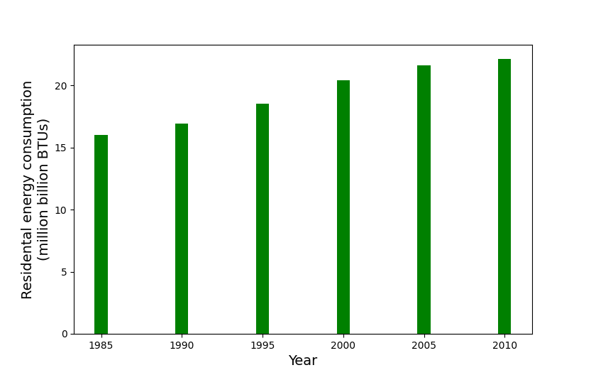
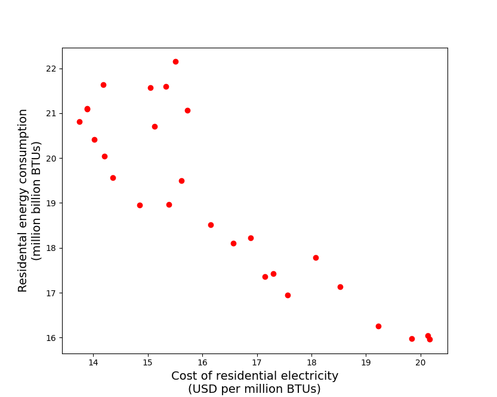

Creating NumPy arrays
np.array infers dtype based on types of numbers in the argument.
1x = np.array([10, 20, 30])2print(x) #[10 20 30]3print(x.dtype) # int6445x = np.array([1.2, 3.14, 10.15])6print(x) #[ 1.2 3.14 10.15]7print(x.dtype) # float6489x = np.array([10.0, 20, 30])10print(x) #[10. 20. 30.]11print(x.dtype) # float64121314# we can explicity specify what dtype we want:15x = np.array([10, 20, 30], dtype=float)16print(x) #[10. 20. 30.]17print(x.dtype) # float641819# float is truncated to int (not rounded)20x = np.array([1.2, 3.14, 10.65], dtype=int)21print(x) #[ 1 3 10]22print(x.dtype) # int64
Different shapes for different purposes
[1.0 5.0 3.5 4.0 5.0 1.2]
One point in 6D euclidean space
[[1.0 5.0 3.5]
[4.0 5.0 1.2]]
Two points in 3D euclidean space
[[1.0 5.0]
[3.5 4.0]
[5.0 1.2]]
Three points in 2D euclidean space
1import numpy as np234x = np.arange(1, 13) # 1D array5print(x)6# [ 1 2 3 4 5 6 7 8 9 10 11 12]789# 2D array, a 3x4 matrix10matrix1 = x.reshape((3, 4))11print(matrix1)12# [[ 1 2 3 4]13# [ 5 6 7 8]14# [ 9 10 11 12]]151617# 2D array, a 2x6 matrix18matrix2 = matrix1.reshape((2, 6))19print(matrix2)20# [[ 1 2 3 4 5 6]21# [ 7 8 9 10 11 12]]222324y = matrix2.reshape((12,)) # 1D array25print(y)26# [ 1 2 3 4 5 6 7 8 9 10 11 12]
numpy.arange and numpy.linspace
1# Similar to built-in range(),2# arguments are start, stop and step34x = np.arange(10)5print(x)6#[0 1 2 3 4 5 6 7 8 9]78# Unlike range() float numbers are allowed9x = np.arange(10.0, 20.0, 2.5)10print(x)11# [10. 12.5 15. 17.5]121314# Create an array of 5 evenly spaced numbers in interval [0, 1]15x = np.linspace(0, 1, 5)16print(x)17# [0. 0.25 0.5 0.75 1. ]
Broadcasting — operations with scalar and numpy array
1x = np.linspace(-1.0, 5.0, 7)23print(x / 5)4# [-0.2 0. 0.2 0.4 0.6 0.8 1. ]56print(x + 4)7# [3. 4. 5. 6. 7. 8. 9.]89print((x - 3) * 2)10# [-8. -6. -4. -2. 0. 2. 4.]
Special values — numpy.nan, numpy.inf
Numpy has special values to represent invalid or extreme values that result from numerical computation
- numpy.nan (not a number)
- numpy.inf (infinity)
1arr = np.linspace(-1.0, 4.0, 6)2print(arr)3#[-1. 0. 1. 2. 3. 4.]45print(np.log(arr))6#[ nan -inf 0. 0.69314718 1.09861229 1.38629436]78# Any operation on np.nan results in np.nan9print(np.nan * 10, 0 / np.nan)10# nan nan1112# Some operations are allowed on np.inf1314print(np.inf, -np.inf)15# inf -inf1617print(0 / np.inf, 1 / np.inf)18# 0.0 0.01920print(np.inf * np.inf, 100 + np.inf)21# inf inf
Vector operations
Arithmetic operators also work when both operands are numpy arrays. The operations are performed element-wise.
1a = np.linspace(10, 50, 5)2print(a) # [10. 20. 30. 40. 50.]3b = np.linspace(1, 5, 5)4print(b) # [1. 2. 3. 4. 5.]56print(a + b)7#[11. 22. 33. 44. 55.]89print(a / b)10#[10. 10. 10. 10. 10.]
Shapes of arrays have to match for vector operations.
1x = np.full(6, 1) # [1 1 1 1 1 1]2y = np.full(8, 2) # [2 2 2 2 2 2 2 2]34print(x + y)5# ValueError: operands could not be broadcast together with shapes (6,) (8,)
Slicing 2D array
1import numpy as np23grades = np.array([[94, 84, 97, 79],4 [81, 88, 93, 85],5 [87, 95, 86, 77]])67print('Grades for student 1, course 2:')8print(grades[1, 2]) # 9391011print('All grades for student 2:')12print(grades[2, :]) # [87 95 86 77]1314print('All grades for course 0:')15print(grades[:, 0]) # [94 81 87]
Assigning values using indices and slices
1import numpy as np23grades = np.array([[94, 84, 97, 79],4 [81, 88, 93, 85],5 [87, 95, 86, 77]])67# Setting same value to all indices in the slice8grades[0:2, 1:3] = 1009print(grades)10# [[ 94 100 100 79]11# [ 81 100 100 85]12# [ 87 95 86 77]]1314# Setting values from array of same shape15grades[0:2, 1:3] = np.array([[10, 20], [30, 40]])16print(grades)17# [[94 10 20 79]18# [81 30 40 85]19# [87 95 86 77]]
Using numpy function on 2D arrays
1import numpy as np23grades = np.array([[94, 84, 97, 79],4 [81, 88, 93, 85],5 [87, 95, 86, 77]])
Google to find methods to do the following:
- Find max and mean (average) for each course (columns).
- Find max and mean (average) for each student (rows).
- Find max and mean of all the grades (whole 2d array).
Using list/array of booleans as index
When comparison operators are used with NumPy arrays, result is an array of boolean values.
1import numpy as np23arr = np.array([10, 11, 12, 13, 14, 15, 16, 17])4print(arr % 2 == 0) # produces numpy array of booleans5# [ True False True False True False True False]
We can use a list/array of booleans as index to select elements of NumPy array
1import numpy as np23arr = np.array([10, 11, 12, 13])4indices = [True, False, False, True]5print(arr[indices])6# [10 13]78arr = np.array([10, 11, 12, 13, 14, 15, 16, 17])9print(arr[arr % 2 == 0])10# [10 12 14 16]111213arr = np.array([-10, -20, 0, 24, -50, 33, 10])14print(arr[arr > 0])15# [24 33 10]
Using a list/array of integers as index
Multiple elements of a numpy array can be selected using a list or an array of indices
1nums = np.arange(10, 100, 10)2# [10 20 30 40 50 60 70 80 90]34indices = [0, 1, 5]5print(nums[indices]) # [10 20 60]67# Output will be in same order as indices8indices = np.array([2, 8, 5, 1])9print(nums[indices]) # [30 90 60 20]
For 2D arrays,
1import numpy as np23matrix = np.arange(1, 13).reshape((3,4))4print(matrix)5# [[ 1 2 3 4]6# [ 5 6 7 8]7# [ 9 10 11 12]]89row_indices = [0, 2]10print(matrix[row_indices, :]) # Select rows 0 & 211# [[ 1 2 3 4]12# [ 9 10 11 12]]1314col_indices = [1, 2]15print(matrix[:, col_indices]) # Select columns 1 & 216# [[ 2 3]17# [ 6 7]18# [10 11]]1920# Select numbers at (0, 1) and (2, 2)21print(matrix[row_indices, col_indices])22# [ 2 11]
Question
Write code to get the numbers that are common between two python NumPy arrays. Google to find which function to use.
1import numpy as np23a = np.array([1, 2, 3, 2, 3])4b = np.array([7, 2, 10, 3, 7])
Question
Write a function that uses NumPy arrays to evaluate the following expression:
Plot the above function with values from interval .
Question — average velocities over time intervals
- For a moving object, we are given a sequence of positions at corresponding times for
- We want to compute average velocity for each of the time intervals,
1y = np.array([0., 1.3, 5. , 10.9, 18.9, 28.7])2t = np.array([0., 0.49, 1. , 1.5 , 2.08, 2.55])
Plotting — US residential sector energy consumption
We use the dataset for US residential sector energy consumption obtained from: http://users.stat.ufl.edu/~winner/data/resid_energy.dat http://users.stat.ufl.edu/~winner/data/resid_energy.txt
Download the following files from myCourses:
- energyconsumption5year.csv
- energyconsumption.csv
Reading the bar and scatter plots
The bar chart for energy consumption versus year shows that since 1985 energy consumption has been gradually increasing with the maximum during 2010
- The scatter plot shows relationship between energy consumption and cost of electricity over time. We see a roughly linear relationship (also called “correlation” in statistical terminology) — high consumption is associated with low cost of electricity.
- This does not imply causal relationship i.e. we cannot say that low cost of electricity caused higher consumption. (We need more detailed analysis for that, e.g we need to look at change in economy (GDP), household income, etc.
Question — creating the plots
Write code to create the bar chart above. Use the function matplotlib.pyplot.bar.
Write code to create the scatter plot above. Use the function matplotlib.pyplot.scatter.